Case Study
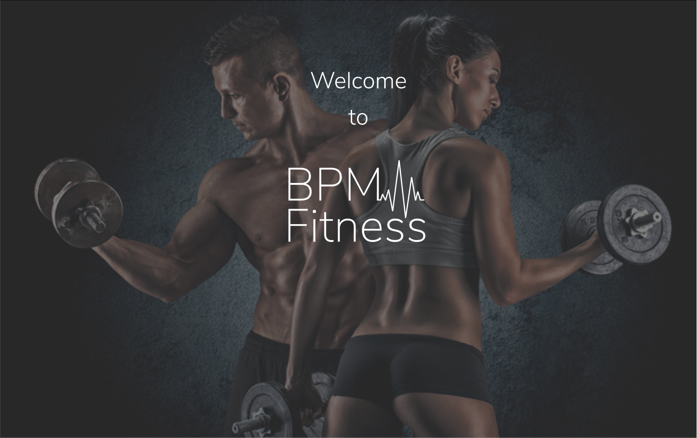
BPM Fitness makes it easy for personal trainers and their clients to connect and share content.
Role
UX/UI Design
User Research
Visual Design
Brand & Identity
Deliverables
User Survey
User Personas
Competetive Analysis
User Stories & Flows
Prototypes & Wireframes
User Testing & Hi-Fi Mockups
Tools
Figma
Google Survey
Usability Hub
InVision
Overview
There are few applications that connect personal trainers with their clients. So, I created a mobile and web based application that allows trainers and their clients to easily share information with each other.
Problem
Trainers need an app that allows them to organize their multiple clients and train them all over the world. Clients need a way to view their fitness plans and track their progress.
Solution
Create BPM Fitness to ensure that connecting and sharing information between personal trainers and their clients is easy and efficient.
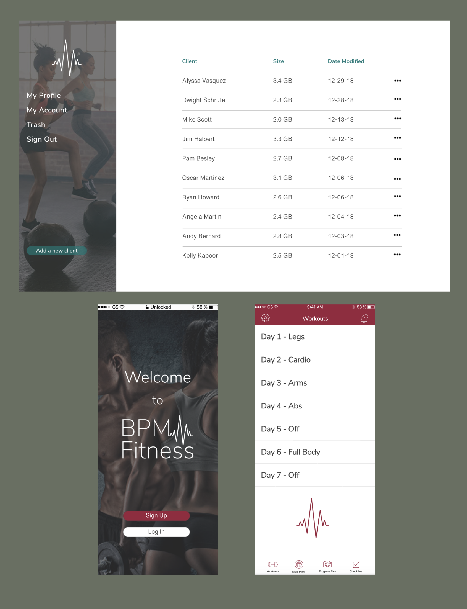
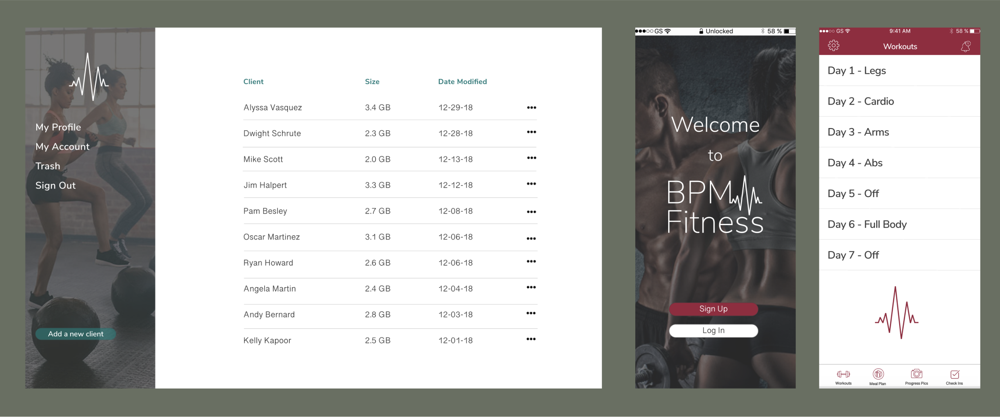
Discovery Phase
Competitive Analysis
The main apps on the market that connect personal trainers with clients are Gain Fitness and My PT Hub. Both apps promise trainers they can build their business and clientele. However, these apps are marketed to the trainers, not their clients and do not allow for two-way communication.
My PT Hub has great features like tracking progress pictures, measurements and nutrition sections but clients and trainers complain about the app not being intuitive.
Gain Fitness primarily offers self-guided workout plans and personal training is only offered in four major cities.
Fitness Builder give clients access to a library of workouts and videos and allows them to track their results and compare them with other users, however, users complain about the functionality of the app.
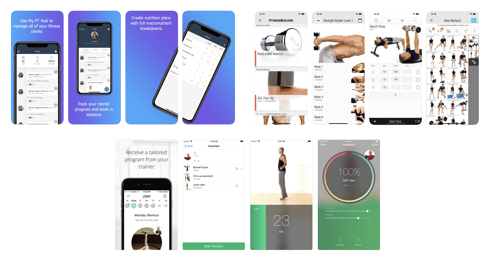
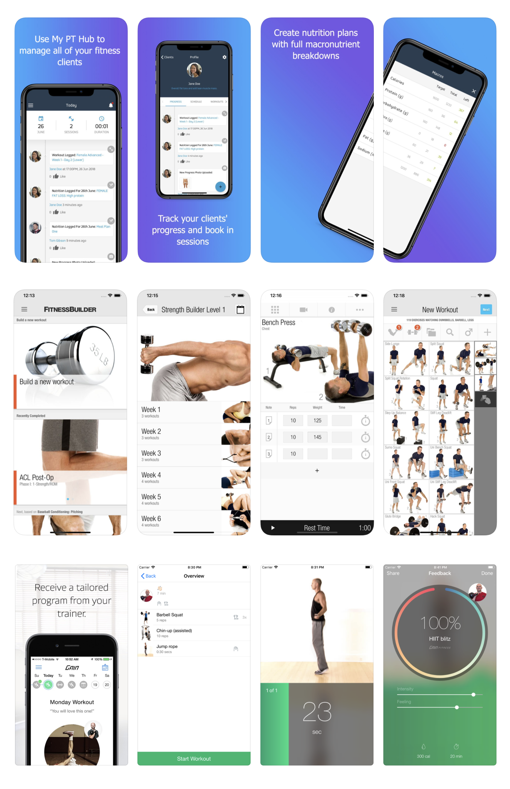
User Survey
I began with a survey to learn the following information:
What users use cloud storage for?
What features they use and what features they want?
How important is sharing files, real time collaboration, easy organization and file recovery?
It is important to understand what features potential users want so that those features are prioritized in the design process. It is also important to note that majority of potential users are younger than 35 years of age, indicating they would most likely be comfortable with this app.
User Personas are built using the demographics found from the user survey. This ensures a clear understanding of the users needs throughout the entire design process.
Target market research shows that personal trainers are college educated or have a training certification and are looking to grow their client base and increase income. Male clients are typically looking for weight training while most women are looking for wieght loss methods like high intensity training and muscle toning. Nealry 40% of clients are millenials, indicating that they are comfortable with technology.
Information Architecture
User Stories & Flows
User personas helped determine user stories. This perspective was necessary in thinking through a well-rounded app with the essential features for users. High priority stories included the onboarding process, logging in, adding, organizing and deleting content, and signing out.
The same user stories became user flows, essentially a path of each task. Building the users flows was necessary in understanding how each page of the app worked, before diving right into the visual design.
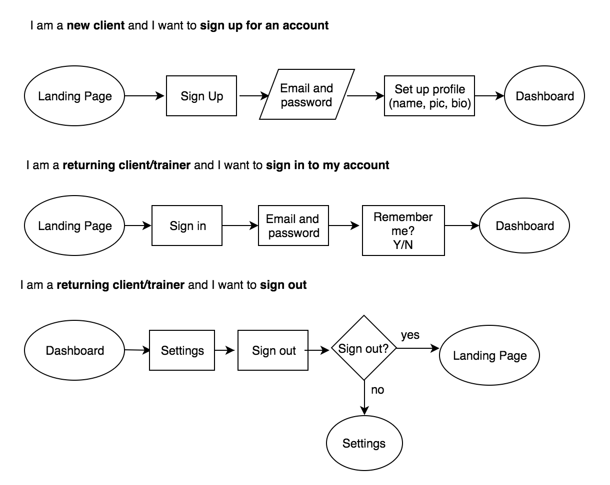
Wireframes
Then came wireframes and sketches of what each page would look like. The wireframes were tested by three users and received positive feedback as far as functionality goes. Users were asked to sign up for an account, add a new progress picture, add a new check in, find the workout for day one and add a new meal plan.
Feedback from the user testing was essential in determining if the app was intuitive. The feedback indicated that both the desktop and mobile version were easy to use and straight forward.
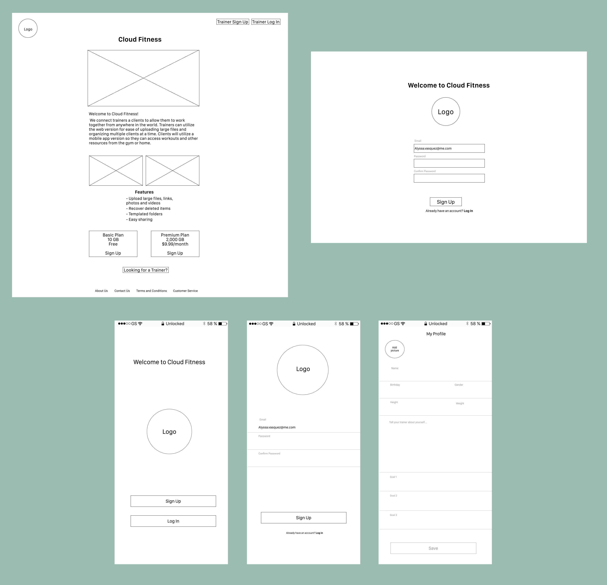
Visual Design
Logo Design
The goal was to create a brand that is inclusive for all types of training. Not everyone lifts weights or does cardio so I stayed away from the classic dumbell and running logos. BPM (beats per minute) represents all types fitness and the health benefits.
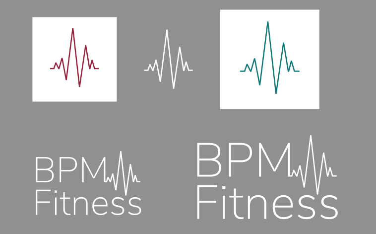
Branding & Identity
The brand characteristics are strength, energy, fitness, health, versatility and flexibility.
I chose the magenta color for the main color for the mobile app for the clients because it is bright and energetic without being overwhelming. The teal color is the main color for the desktop/web version of the app for trainers because blue is the color of trustworthiness and responsibility but the green hue makes it more vibrant and energetic.
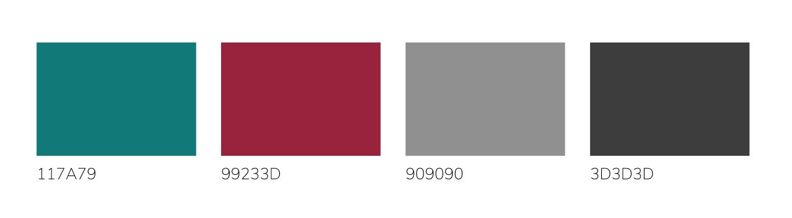
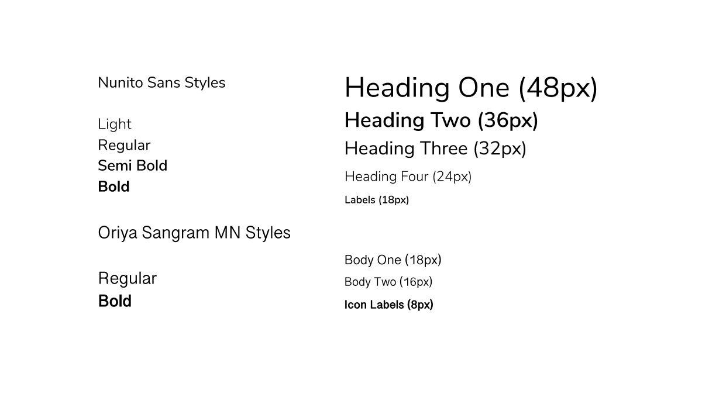
Prototype & Testing
Various screen were voted on by users to determine their preference. Users chose the simplest entry forms for the mobile sign up and login screens. They voted on the background image for the desktop version sign up page as well as the main layout for the landing page.
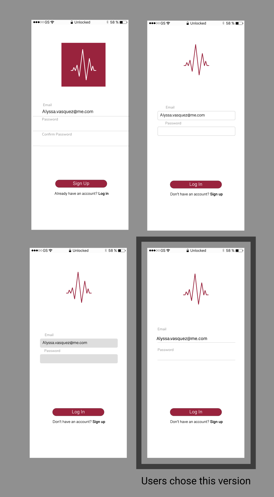
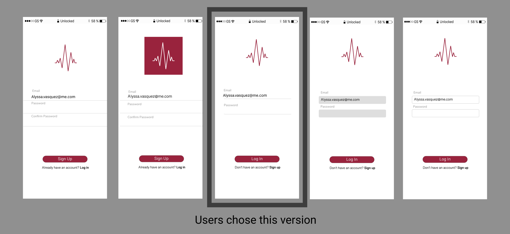
Then users were tested on the clickable prototype to ensure that users understand how to navigate it. It was important to include a script with basic information about the app and what tasks they needed to complete. Tasks for the mobile version included signing up, adding a progress picture, adding a check in, adding a new meal plan, finding the workout for day one and signing out.
The feedback supported the functionality of the desktop and mobile version of the app. Users had an easy time navigating through the clickable prototypes therefore, nothing needed to be changed.